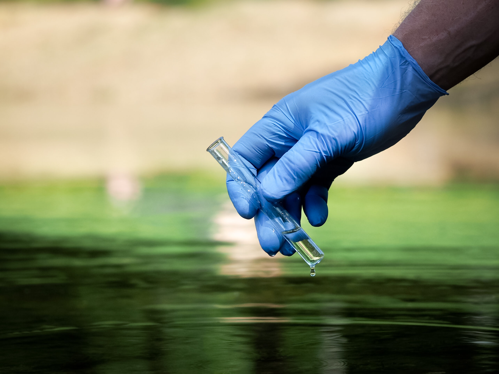
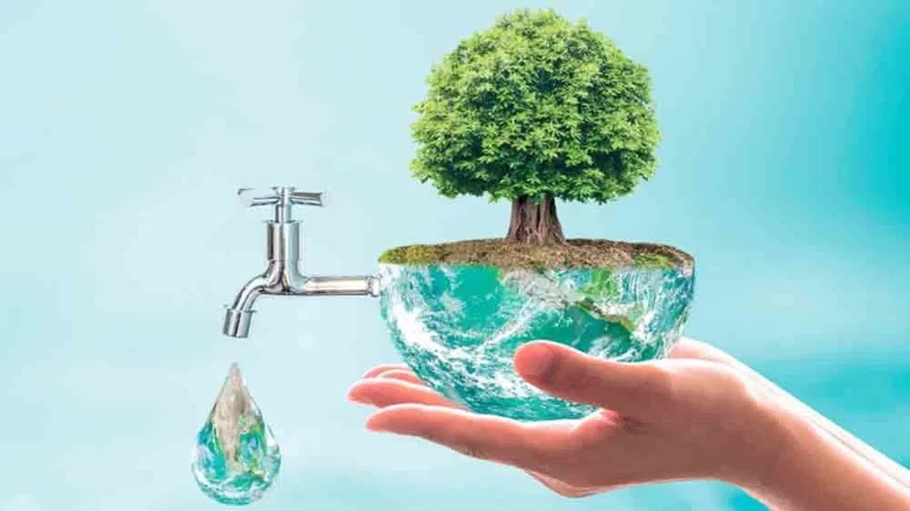

Mumbai’s dense urban population, extensive industrial zones, coastal geography, and aging infrastructure have placed immense pressure on water resources. Industrial discharge, sewage overflow, port activities, and urban runoff have made real-time water quality monitoring essential for protecting rivers, coastal waters, groundwater, and municipal water supplies across Mumbai.

Conventional laboratory-based water testing methods are often slow and ineffective for continuous regulatory compliance in Mumbai. To meet CPCB and Maharashtra Pollution Control Board (MPCB) requirements, industries and municipal bodies are adopting Online Water Quality Monitoring Systems (EQMS) integrated with IoT, automation, and real-time data transmission for accurate monitoring and compliance reporting.
HUMAN ACTIVITIES AND WATER POLLUTION IN MUMBAI
In Mumbai, untreated or partially treated industrial effluents, sewage from STPs, and coastal discharge introduce harmful pollutants such as heavy metals, organic waste, oils, chemicals, and suspended solids into water bodies. These pollutants degrade water quality, threaten marine ecosystems, and pose serious risks to public health.

Industrial activities, port operations, construction runoff, and urban drainage across Mumbai and Navi Mumbai increase levels of COD, BOD, TSS, ammonia, and other contaminants in surface and groundwater. Without continuous online monitoring, pollution levels can exceed permissible limits, resulting in regulatory violations and environmental damage.
Agua Instruments provides CPCB and MPCB compliant water quality monitoring systems in Mumbai for industries, STPs, ETPs, coastal monitoring, and municipal applications. Our EQMS solutions deliver real-time monitoring, OCEMS-ready data transmission, and actionable insights to help organizations maintain compliance, reduce pollution, and protect Mumbai’s water and coastal ecosystems.
With high industrial density, coastal sensitivity, and growing urban demand, Mumbai requires continuous and reliable water quality monitoring. EQMS solutions provide real-time visibility of key water parameters, enabling industries and authorities to detect pollution incidents early and take immediate corrective actions.
By implementing CPCB and MPCB compliant EQMS systems, industries and municipal bodies in Mumbai can achieve continuous regulatory compliance, enhance transparency, prevent environmental violations, and support sustainable water and coastal resource management. Real-time water quality monitoring plays a critical role in protecting public health and ensuring long-term water security for Mumbai and surrounding regions.
Why Choose Agua Instruments for Water Quality Monitoring in Mumbai
CPCB & MPCB Compliant Systems
Our water quality monitoring systems in Mumbai fully comply with CPCB and MPCB guidelines, ensuring seamless regulatory approvals and compliance reporting.
Advanced Online Water Analyzers
High-precision online analyzers for COD, BOD, TSS, TOC, pH, DO, conductivity, ammonia, nitrate, and chlorine for continuous monitoring.
24x7 Real-Time Monitoring
Real-time water quality monitoring with automated alerts and reports to help Mumbai industries take immediate corrective actions.
IoT & Cloud-Based Platforms
IoT-enabled, cloud-based monitoring platforms provide secure remote access, live dashboards, trend analysis, and automated reporting.
Complete Project & AMC Support
End-to-end services including site survey, installation, commissioning, calibration, training, and AMC support across Mumbai and Navi Mumbai.

Real-time water quality monitoring systems for Mumbai municipal water treatment plants to ensure safe drinking water by monitoring pH, turbidity, chlorine, and microbial parameters.

Online wastewater monitoring solutions for industries in Mumbai to meet CPCB and MPCB compliance through continuous effluent quality measurement.

Continuous monitoring of rivers, lakes, coastal zones, and surface water bodies in Mumbai to track pollution levels, DO, BOD, COD, and chemical contaminants.

Smart water quality monitoring solutions for peri-urban agriculture around Mumbai to optimize irrigation practices and reduce nutrient runoff.

Online monitoring of pH, temperature, ammonia, and dissolved oxygen to support aquaculture and fisheries operations in and around Mumbai.

High-precision water quality monitoring instruments for Mumbai-based research institutions focusing on water pollution, coastal studies, and environmental sustainability.

Water quality monitoring systems for food and beverage industries in Mumbai to ensure compliance with FSSAI hygiene and safety standards.

Continuous monitoring of chlorine, pH, and microbial parameters to maintain safe swimming pool and recreational water quality in Mumbai.
Practical water quality monitoring systems for Mumbai schools, colleges, and universities to support environmental science, marine studies, and sustainability education.
| Ammonium | NH4 | 0.1 ...1000 mg/L & 0 ... 10 ppm |
| Nitrates | NO₃⁻ | 0.1 ... 20 mg/L |
| Nitrites | NO₂⁻ | 0.01 ...1000 mg/L |
| Total Nitrogen | TN | 0.1 ...1000 mg/L |
| Phosphates | PO4 | 3- 0.01 ... 20 mg/L |
| Total Phosphorus | TP | 0.01 ... 20 mg/L |
| Chemical Oxygen Demand Equivalent | CODeq | 1 ...10000 mg/L |
| COD Dichloromate | CODeq- | 1 ...10000 mg/L |
| Biochemical Oxygen Demand Equivalent | BODeq- | 1 ...10000 mg/L |
| Total Organic Carbon | TOC | 1 ...10000 mg/L |
| TOC High Temperature | TOC-HT | 0-50,000 mgL |
| Sulphides | S2- | 0.1 ...1000 mg/L |
| Sulphites | SO32- | 0.1 ...1000 mg/L |
| Total Solids | TS | 0.1 ...1000 mg/L |
| Total Suspended Solids | TSS | 0.1 ...1000 mg/L |
| Turbidity | TURB | 0.001 ... 10000 NTU |
| Color | COL | 0.01... 2000 Pt-Co |
| Chlorine | Cl2 | 0.01 ... 20 mg/L |
| Chlorine Dioxide | ClO2 | 0.01 ... 20 mg/L |
| Total Chlorine | TCl | 0.1 ...1000 μg/L |
| Chlorophyll | Chl-a | 0.01 ... 100 mg/L |
| Hydrocarbons | HC | 0.01 ... 100 mg/L |
| Oxygen | O2 | 0.01 ... 100 mg/L |
| Conductivity | EC | 0.001 ... 2000 mS/cm |
| pH | pH+ | 0 ... 14H+ |
| Ozone | O3 | 0.01 ... 10 mg/L |
| Aluminium | Al | 0 ... 1 mg/L |
| Total Ammonia Nitrogen | TAN | 0 .... 100 mg/L |